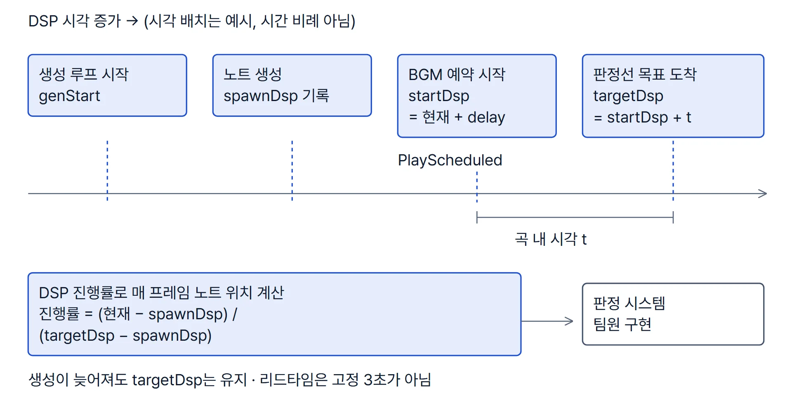
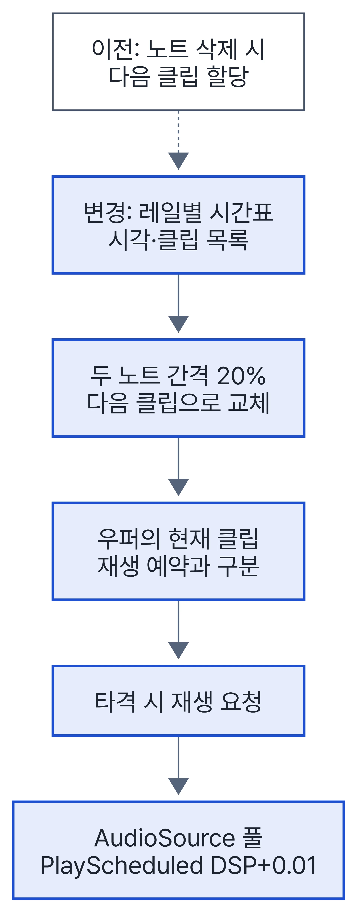
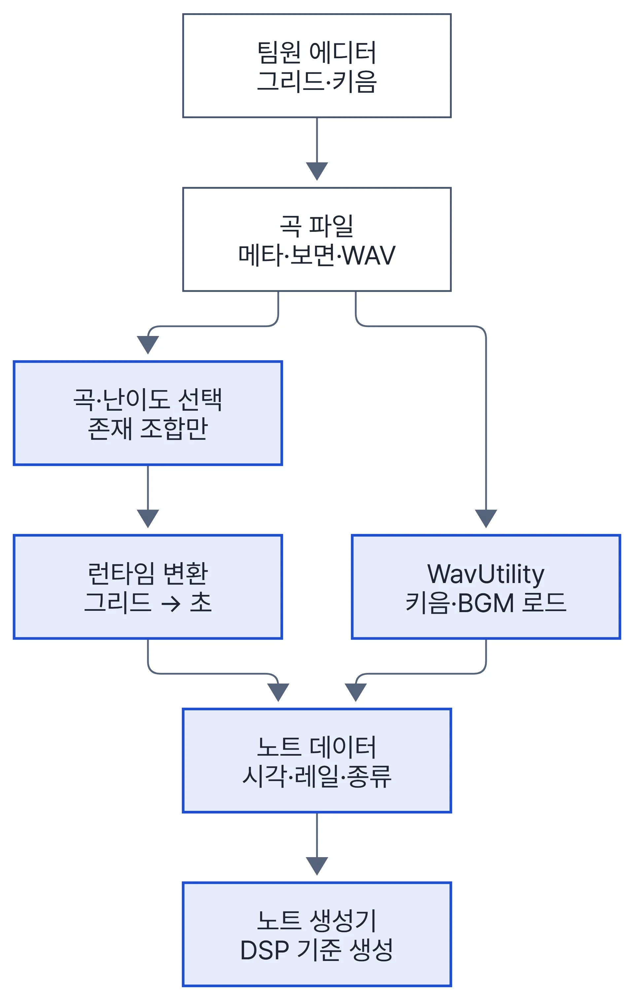

프로젝트 1VR 리듬 게임경일게임아카데미 기업 협약 XR 프로젝트
NT (Night Traveler)
노트 생성·이동과 BGM·타격음 재생을 맡아, BGM 시작과 노트 도착을 같은 오디오 시계로 계산했습니다.

- 기간
- 2025.02~2025.04
- 팀
- 9인(개발 5·기획 4, 저장소 README 기준) · 개발팀장
- 내 역할
- 노트 생성·이동, BGM·타격음 재생, 레일별 키음 시간표, 곡 데이터 변환·WAV 로드
- 코드 귀속
- 현재 코드의 git blame 기준(팀원의 파일 이동 커밋 제외) 오디오 스크립트 약 87%, 노트 스크립트 약 34%가 본인. 판정 2%, Photon 멀티 0%, 곡 에디터 0.5%로 팀원 영역
- 기술
- Unity 2020.3.18f1 · C# · XR Interaction Toolkit · Meta Quest 2·3 · Photon PUN2(팀원 담당)
본인·팀원 범위
| 구간 | 담당 |
|---|---|
| 노트 생성·이동, BGM·타격음 재생, 키음 시간표, 곡 데이터 변환, WAV 로드 | 본인 |
| 판정·컨트롤러 스윙, Photon 2인 멀티, 곡 에디터, 상단 노트 판정 | 팀원 |
NT에서 함께 맡은 일
| 한 일 | 근거 |
|---|---|
| 곡 에디터(팀원)가 저장한 그리드 좌표를 초 단위 노트 데이터로 바꾸는 변환 계층 | ProjectToLoadedData.cs L13–60 |
| 에디터에서는 되고 VR 빌드에서 실패하던 외부 WAV 로드를 직접 파싱으로 교체(8·16·24bit PCM과 32bit float만 처리) | WavUtility.cs · 5a91cc0 |
| 모드×난이도 12조합을 비트 플래그로 표현해, 곡에 없는 난이도는 고를 수 없게 처리 | c96a384 |
| 2인 멀티용으로 같은 곡의 두 보면을 각각 변환해 전달(네트워크 동기화는 팀원) | 3ead495 |
| 개발팀장으로 이슈·PR 템플릿을 만들고 GitHub PR 병합을 맡음 | — |
NT사례 1본인 구현
1 BGM 예약 재생과 노트 도착 시각을 같은 오디오 시계로
- 문제
- 리듬 게임은 곡의 n초에 노트가 판정선에 닿아야 합니다. 초기 노트는 고정 스텝
MoveTowards로 움직여, 생성이 늦어진 만큼 도착 시각도 밀리는 구조였습니다. - 제약
- BGM은 AudioSource가, 노트는 MonoBehaviour가 움직여 기준 시계가 서로 달랐습니다. 노트는 도착보다 먼저 생성돼야 하고, 2인 멀티에서는 생성기가 여럿입니다.
- 판단
- 시작 시각 하나를 오디오 엔진 시계(
AudioSettings.dspTime)로 정해 BGM 예약과 모든 노트 계산의 기준으로 삼았습니다. - 구현
startDsp = dspTime + delay로 BGM을PlayScheduled하고, 같은 값을 모든 노트 생성기에 넘깁니다. 노트 목표 시각은startDsp + 곡 내 시각입니다. 위치는 DSP 진행률로 Lerp하고, 판정선을 지나면 같은 속도로 계속 이동합니다. 관련 코드 AudioManager.cs L78–94 · NoteGenerator.cs L94–139 · Note.cs L48–85 · 변경 커밋 b785d43 · c4af792- 결과
- 생성이 몇 프레임 늦어도 목표 시각은 그대로이고, 노트 위치는 매 프레임 그 목표 시각에서 다시 계산됩니다.
| 기준 시계 | 장점 | 한계 |
|---|---|---|
| 프레임 시간(Update·코루틴) | 구현이 단순함 | 오디오 재생 시계와 기준이 다름 |
| BGM 재생 위치(AudioSource.time) | 곡 위치를 그대로 읽음 | BGM 시작 전 노트 선행 생성 구간을 표현하기 어려움 |
| dspTime + PlayScheduled (선택) | BGM 시작 전 구간도 같은 시계, 여러 생성기에 같은 값 전달 | 생성 루프는 폴링 주기에 의존 |


NT사례 2본인 구현
2 노트 수명에 묶인 키음 선택을 레일별 시간표로 분리
- 문제
- 기존에는 노트가 삭제될 때 우퍼(드럼)에 다음 노트의 키음을 할당했습니다. 조금 늦게 치면 이미 다음 노트 소리로 바뀌어, 의도와 다른 키음이 났습니다.
- 원인
- 키음 선택이 노트 오브젝트의 생존 상태에 묶여 있었습니다. 우퍼는 노트가 없어도 칠 수 있어서, 빈 타격에 낼 소리도 정해져 있어야 했습니다.
- 판단
- 키음을 고르는 기준을 노트 상태에서 레일별 시간표로 옮겼습니다.
- 구현
- 전체 노트를 절대 DSP 시각으로 바꿔 레일별 시간표에 나누고, 두 노트 간격의 20%를 지나면 다음 클립으로 바꿉니다. 상단 노트까지 담도록 시간표 배열을 4레일에서 12레일로 넓혔습니다. 타격마다 풀에서 별도 AudioSource를 꺼내
PlayScheduled로 예약 재생하도록 구성했습니다. 관련 코드 NoteAudioScheduler.cs L17–68 · NoteManager.cs L44–90 · AudioManager.cs L36–76 · AudioPool.cs L26–47 · 변경 커밋 21580a1 · 3f97598 · 연타 재생 3ec6414 - 결과
- 키음은 노트가 살아 있는지와 상관없이 시간표로 정해집니다. 20% 지점이 지난 뒤의 늦은 타격은 여전히 다음 노트 소리를 냅니다.


| 키음 선택 기준 | 한계 |
|---|---|
| 노트 삭제 시 다음 클립 할당 (기존) | 늦은 타격·빈 타격에서 다른 소리 |
| 판정 결과의 노트 클립 재생 | 노트가 없는 빈 타격의 소리를 정할 수 없음 |
| 레일별 (시각, 클립) 시간표 (선택) | 클립 전환 지점(간격의 20%)이 고정 상수 |

